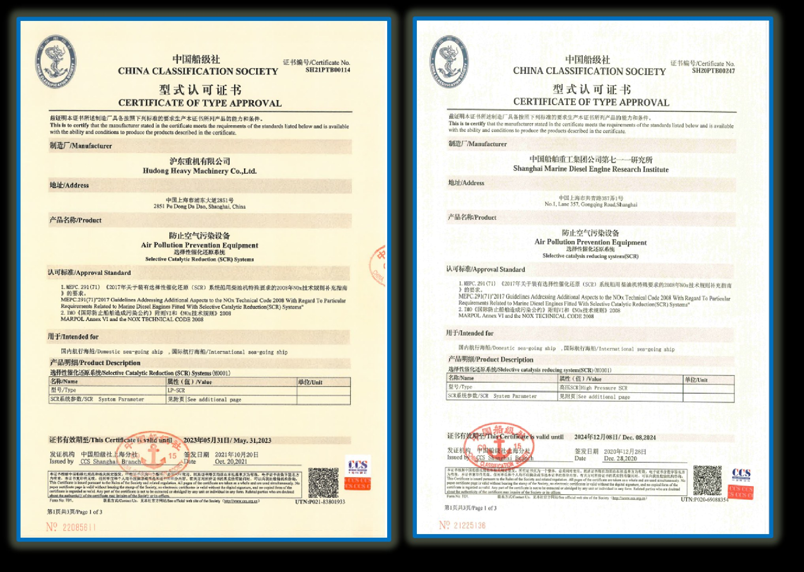

Custom Engineered Solutions
Tailored SCR catalyst design based on real flue gas conditions.
Backed by Huadian Environmental Since 1998
Manufactured by Huadian Environmental | Represented Globally by JATA Environmental
Solutions & Services
Tailored SCR catalyst design based on real flue gas conditions.
Guidance for SCR system design, retrofit, and optimization.
Over 1,000 industrial applications, backed by Cormetech-origin technology.
Full lifecycle support from deployment to replacement.
Technology & Proof
The company operates a CNAS-accredited testing center, ensuring reliable and standardized catalyst performance evaluation.
We provide integrated technical services covering:
 60,000 m² Smart Manufacturing Facility
60,000 m² Smart Manufacturing Facility Automated Production with Robotic Systems
Automated Production with Robotic Systems SCR Catalysts Designed for Marine Applications
SCR Catalysts Designed for Marine Applications 108-Cell SCR Catalyst for Internal Combustion Engines
108-Cell SCR Catalyst for Internal Combustion Engines Cormetech Technology Authorization
Cormetech Technology Authorization
China's First Classification Society-Certified SCR Catalyst ManufacturerCompany & Capability
From manufacturing to application, ensuring stable performance and long-term system reliability.
Contact
Our engineering team will analyze your flue gas conditions and recommend the optimal catalyst configuration - typically within 24 hours.
HUADIAN QINGDAO ENVIRONMENTAL TECHNOLOGY CO., LTD.
No. 11 Siyuan Road, High-tech Industrial Development Zone
Qingdao, Shandong, China
Qingdao Jata Environmental Technology Co., Ltd.
qingdaojata@gmail.com
No. 170 Xuzhou North Road, Shibei District
Qingdao, Shandong, China